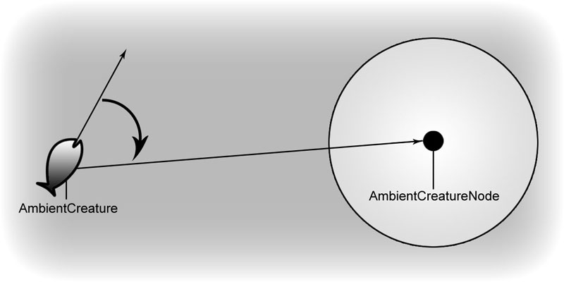
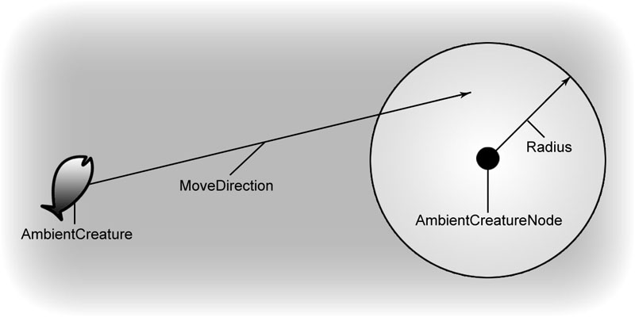
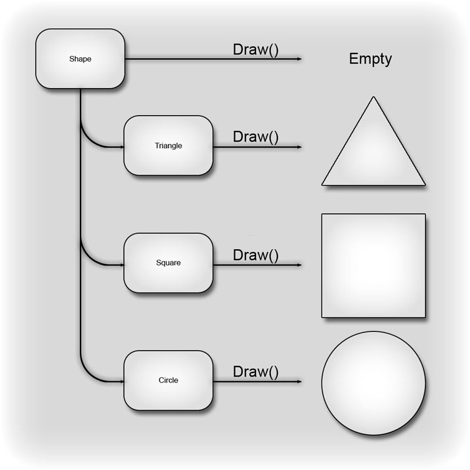
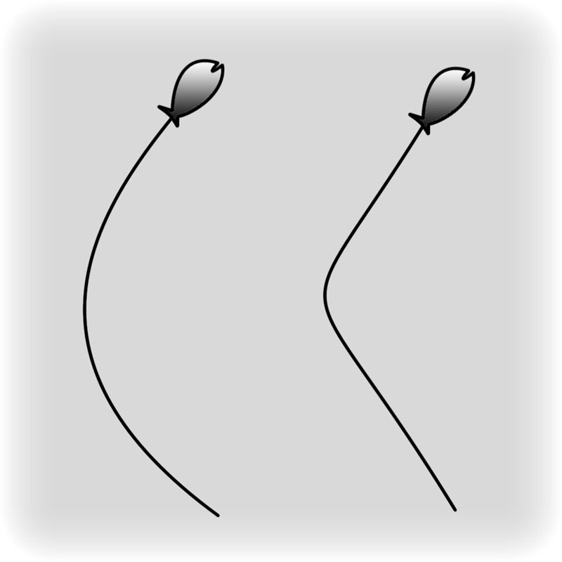
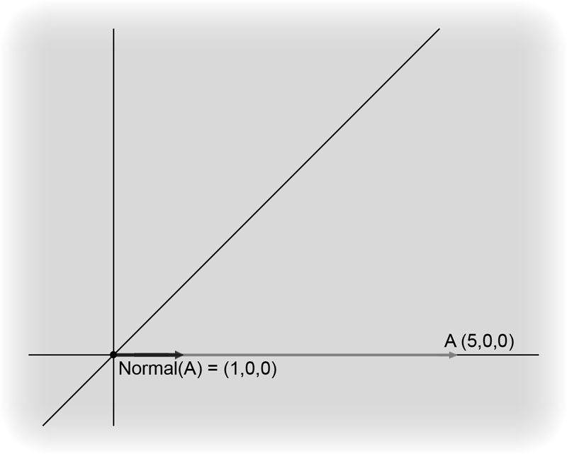

UDN
Search public documentation:
MasteringUnrealScriptFunctionsCH
English Translation
日本語訳
한국어
Interested in the Unreal Engine?
Visit the Unreal Technology site.
Looking for jobs and company info?
Check out the Epic games site.
Questions about support via UDN?
Contact the UDN Staff
日本語訳
한국어
Interested in the Unreal Engine?
Visit the Unreal Technology site.
Looking for jobs and company info?
Check out the Epic games site.
Questions about support via UDN?
Contact the UDN Staff
- 第六章 –函数
- 6.1概述
- 指南 6.1环境生物, 第一部分:基类声明
- 指南 6.2 环境生物, 第二部分:类的变量声明
- 指南 6.3 环境生物,第三部分:渲染及光照组件
- 指南 6.4 环境生物, 第四部分:碰撞及物理属性
- 6.2 函数声明
- 指南 6.5 环境生物, 第五部分: SETRANDDEST() 函数
- 6.3函数修饰符
- 6.4 返回值
- 指南 6.6 环境生物, 第六部分: SETDEST() 函数
- 6.6函数重载
- 6.7 SUPER关键字
- 指南 6.7 环境生物, 第七部分: POSTBEGINPLAY() 函数
- 指南 6.8 环境生物, 第八部分: TICK() 函数
- 6.8 TIMER 函数
- 指南 6.9 环境生物, 第九部分: SETRANDDEST 计时器
- 指南 6.10 环境中的鱼, 第一部分:创建类
- 指南 6.11 环境中的鱼, 第二部分: 默认属性
- 指南 6.12环境中的鱼, 第三部分: POSTBEGINPLAY() 函数
- 指南 6.13 环境中的鱼, 第四部分: SETRANDDEST() 函数
- 指南 6.14 环境中的鱼, 第五部分: TICK() 函数
- 6.9 内置函数
- MATH(数学函数)
- Rand(Int Max)/FRand()
- Min(Int A, Int B)/FMin(Float A, Float B)
- Max(Int A, Int B)/FMax(Float A, FloatB)
- Clamp(Int V, Int A, Int B)/FClamp(Float V, Float A, Float B)
- RandRange(Float InMin, Float InMax)
- VSize(Vector A)
- Normal(Vector A)
- MirrorVectorByNormal(Vector InVect, Vector InNormal)
- FloatToByte(Float inputFloat, Optional Bool bSigned)
- ByteToFloat(Byte inputByte, Optional Bool bSigned)
- STRING(字符串函数)
- Len(Coerce String S)
- InStr(Coerce String S, Coerce String T)
- Mid(Coerce String S, Int i, Optional Int j)
- Left(Coerce String S, Int i)
- Right(Coerce String S, Int i)
- Divide(Coerce String Src, String Divider, Out String LeftPart, Out String RightPart)
- Split(Coerce String Src, String Divider, Out Array Parts)
- Repl(Coerce String Src, Coerce String Match, Coerce String With, Optional Bool bCaseSensitive)
- 各种其它函数
- MATH(数学函数)
- 6.10总结
- 附加文件
第六章 –函数
在这章中，将讨论类通过使用函数来执行动作的功能。除了变量声明及设置这些变量的默认属性外，从本质上来讲，属于类的所有代码都包含在函数中。所以为了使得类及程序能够真正地做一些有意思的事情，函数是必不可少的。一旦您已经熟练地掌握了函数以及它们的工作原理，那么您便可以创建一些有用的类，这些类可以转换为令人兴奋的游戏体验。6.1概述
那么，到底什么是函数？函数是类中的一组命令的指定容器，它可以执行特定的任务。通过把相关的代码行集中到指定的单元，便可更加容易管理地程序。并且使得执行经常使用的代码变得更加容易。通过使用函数的名称调用函数，便可以执行和那个函数相关的代码，而不必每次都把要执行的代码写出来。一旦执行完那个函数的代码，程序会从函数调用发生的地方继续开始向下执行。 为了使函数变得更加灵活，函数也可以通过参数的形式取入信息，并且也可以输出一个值。通过使函数可以和其它的程序通信，使得游戏中的actors具有发出命令及和另一个actor交谈的能力。一个类的数据可以由另一个类的函数来处理并把最终的处理结果返回原始的类。如果函数没有这么好的通信功能，那么它便不是动态的，也就不会这么有用了！ 正如您在第4章所学到的：变量，可以在函数中声明称为局部变量的特殊变量来在那个函数中进行使用。这允许函数创建可以使用及操作的数据。但是，这些数据仅在函数正在执行时存在。不能在处函数内部之外的任何地方访问它们，并且在函数执行期间它将不会持续存在。当开始执行函数时，它读取局部变量声明并创建这些变量。在函数执行过程中，它们像正常的变量一样，可以执行对它们的修改。当函数执行结束，它的所有局部变量都会被销毁。 注意:局部变量的声明必须在函数中所有其它代码之前进行。如果在局部变量声明的前面放置了任何代码，那么当编译脚本时将会发生错误。指南 6.1环境生物, 第一部分:基类声明
这本章的指南中，您将会创建一些必要的类来实现一些些常简单的可以放置在地图中为玩家提供更可信的环境的环境生物。我们将会致力于创建一种单一类型的鱼，但是通过使用面向对象的特性，从而使得添加其它类型的鱼甚至其它类型的生物将变得非常地简单。 我们通过建立包含一般通用功能的基类AmbientCreature开始。从本质上讲，这个类将会处理生物要移动到的位置选择，然后设置那个生物朝那个位置运动。我们也将会创建一个AmbientCreatureNode类，它将会标记位置，生物可以从那个位置开始选择新的目的地。
图片 6.1 – AmbientCreatureNode 用作为AmbientCreature 的路径的定位器。 1. 打开ConTEXT，并通过从File(文件)菜单中选择New(新建)或按下工具条上的New File(新建文件)按钮来创建新的文件。同时请确保选择了UnrealScript highlighter(轮廓)。

图片 6.2 –创建一个新的UnrealScript文档。 2. 正上面所说的，我们的环境生物的基类的名称是AmbientCreature。这个类继承了Actor类。在脚本的第一行上，通过输入以下代码来声明这个类：
class AmbientCreature extends Actor;3. 将会在这个类中添加很多代码，但是暂时我们将会简单地保存脚本，以便我们可以继续前进，然后创建AmbientCreatureNode类，因为我们在声明AmbientCreature类的类变量时将会需要它。 从File(文件)菜单中选择Save As(另存为)，并导航到在前面的指南中创建的MasterinUnrealScript/Classes目录。使用和声明中的类名相匹配的文件名AmbientCreature.uc来把文件保存到这个位置。

图片 6.3 –保存AmbientCreature.uc 脚本。 4. 通过ConTEXT中的File(文件)菜单或工具条，并选择UnrealScript highlighter(轮廓)来创建另一个新的文件。 5. 在新文件的第一行上，声明AmbientCreatureNode类。和AmbientCreature类不同，这个类将不会扩展Actor类。为了使得这个类在UnrealEd中有一个图标，我们将使这个类继承于Info类。因为如果没有图标，将不能快速地看到节点的放置位置，从而使关卡设计人员的工作变得非常困难。添加以下代码来声明类。
class AmbientCreatureNode extends Info placeable;6. 为这个新类添加变量声明。这个变量是浮点型的，称为Radius。这个值允许设计人员围绕这个节点指定一个半径，该半径将会用于使得生物在它们的运动中有少许的变化。 var Float Radius; 7. 您可能已经注意到了Radius变量没有声明为可编辑变量。通过使用DrawSphereComponent，我们将会为设计人员提供一种可视化地在编辑器中设置这个半径的方法。添加以下声明来把DrawSpereComponent添加到节点类中：
var() Const EditConst DrawSphereComponent RadiusComponent;8. 通过添加以下显示的defaultproperties代码块来为这个Radius半径设置默认值。
defaultproperties
{
Radius=128
}
9. 在defaultpropertiesd代码块中，添加以下代码行来创建DrawSpereComponent，并把它附加到那个节点上。
Begin Object Class=DrawSphereComponent Name=DrawSphere0 SphereColor=(B=255,G=70,R=64,A=255) SphereRadius=128.000000 End Object RadiusComponent=DrawSphere0 Components.Add(DrawSphere0);10. 最后一步是设置节点的Radius属性等于运行时的DrawSpereComponent的半径，因为设计人员仅能在编辑器中访问DrawSpereComponent。我们可以通过重写PreBeginPlay()函数来实现这个功能。
function PreBeginPlay()
{
Radius = RadiusComponent.SphereRadius;
Super.PreBeginPlay();
}
11. 从File(文件)菜单中选择Save As(另存为)，并导航到在前面的指南中创建的MasterinUnrealScript/Classes目录。使用和声明中的类名相匹配的文件名AmbientCreatureNode.uc来把文件保存到这个位置。

图片 6.4 –保存AmbientCreatureNode.uc 脚本。 完成了这些设置后，我们在下一个指南中将开始装配生物的基类。 <<<< 指南结束 >>>>
指南 6.2 环境生物, 第二部分:类的变量声明
对于所有生物来说，有很多变量是共同的，所以我们可以把这些变量添加到基类AmbientCreature中。在这个指南中，我们将会为所有这些变量创建声明。 1. 如果还没有打开AmbientCreature.uc文件，那么打开ConTEXT并打开AmbientCreature.uc。 2. 按下回车键几次，以便从类的声明向下移动几行。 3. 记住，我们在前面的指南中创建了一个用作为我们生物的目的地的位置标记的类。为了选择一个位置作为目的地，我们需要一种方式来在生物类中存储这些信息。我们将使用一个动态数组来达到这个目的，因为我们不知道在任何给定情况下会有多少个节点。我们也想允许设计人员向这个属性中添加节点，以便为任何独立的生物提供一个特定节点来作为可能的目的地。输入以下代码来声明MyNodes变量，这个节点将会保存和这个生物相关的AmbientCreatureNodes的信息。var() array<AmbientCreatureNode> MyNodes;4. 如果生物简单地从一个目的地移动到下一个目的地，那么有时候这些行为开始看上去是重复的并且可预知的。为了防止这种情况发生，我们将创建了生物在一个方向移动的最小和最大时间量。这将会导致更加随机的运动形式。我们将为这些变量使用浮点值。在MoveDistance变量声明的后面添加这行代码：
var float MinTravelTime,MaxTravelTime;您会注意到我们使用一行代码声明了两个变量。因为这两个变量是相互联系的，处于好管理的目的我们把它们放在一起。 5. Unreal将会使用从生物的Actor类继承而来的Velocity变量决定生物运动的方向及速度。这意味着如果我们要想设置这个Velocity变量来使生物移动到我们期望的地方，我们需要有运动的速度和方向。 正如您稍后会看到的，将仅使用一次方向来设置生物的期望旋转值。然后物理引擎将会使生物开始朝向目的地旋转。任何时候，我们将使用生物正在面对的方向作为运动的方向，并把它和速度相乘。这意味着方向可以是一个局部变量，因为它已经被计算、使用并废弃了。但是，在整个生物类中速度会被用到几次，所以我们需要一个变量来存储这个值。在脚本的下一行中输入以下信息：
var Float Speed;6. 出现的生物可以具有任何大小尺寸，如果我们的所有生物都具有同样的尺寸那么看上去是非常愚蠢的。为了允许每种类型的生物都可以指定它自己的最下和最大尺寸，我们将会为这些值声明变量，并使得每个子类设置这些变量的值。这些值可以用于计算每个生物实例的随机范围。在Speed声明后的代码行中添加以下声明。
var Float MinSize,MaxSize;7. 现在，我们已经有了生物的基类需要的变量。保存文件来保存您的成果。 <<<< 指南结束>>>>
指南 6.3 环境生物,第三部分:渲染及光照组件
在我们详细了解生物类的主要功能之前，我们需要设置的最后一步是默认属性。我们需要确保生物具有正确的物理类型、碰撞设置以及显示和照亮网格物体的方法。首先，我们关注渲染及光照设置。 1. 如果还没有打开AmbientCreature.uc，那么打开ConTEXT并打开AmbientCreature.uc文件。 2. 第一部是打开defaultproperties代码块。按下回车键几次从而使得变量声明的下面有一些空行。通过添加以下代码，打开defaultproperties代码块。
default properties
{
3. 因为这些是运动的对象，它们需要被动态地照亮。所以我们将会利用DynamicLightEnvironment来保持照亮生物的光照消耗最小。为了实现这个目的，我们将需要在defaultproperties代码块中创建一个子对象，并把它添加到生物的Components数组。正如我们在前几章所看到的，在默认属性中创建子对象需要使用Begin Object语法，它的后面跟随的是类和新对象的名称。要想结束子对象的创建我们将使用End Object语法。
按下回车键几次，向下移动几行，然后按下Table键来缩进这段代码。输入以下代码来创建DynamicLightEnvironment。
Begin Object Class=DynamicLightEnvironmentComponent Name=MyLightEnvironment End Object4. 创建了DynamicLightEnvironment后，我们需要把它分配给Components数组。任何时候您使用某种类型的组件时，为了使它们有效，都需要把它们分配给Components数组。添加以下代码来创建DynamicLightEnvironment(动态光照环境)。
Components(0)=MyLightEnvironment我们可以简单地使用我们先前创建的子对象的名称并把它分配给Components数组的第一个元素。 5. 我们将使用一个静态网格物体作为我们的生物的显示网格物体，以便我们可以暂时避免处理动画。和DynamicLightEnvironment一样，这需要创建一个子对象并把它分配给Components数组。在脚本的下一行中输入以下代码：
Begin Object Class=StaticMeshComponent Name=MyStaticMesh在结束子对象之前，这是我们需要设置一个属性。我们也需要告诉这个StaticMeshComponent使用我们先前创建的DynamicLightEnvironment。缩进下一行并添加以下代码：
LightEnvironment=MyLightEnvironment组后，结束子对象：
End Object6. 现在我们必须把这个组件添加到Components数组中。在脚本的下一行输入以下代码：
Components(1)=MyStaticMesh7. 保存脚本来保存您的成果。 <<<<指南结束 >>>>
指南 6.4 环境生物, 第四部分:碰撞及物理属性
继续处理生物基类的默认属性，我们现在就将设置碰撞及物理属性。 1. 如果还没有打开AmbientCreature.uc文件，那么打开ConTEXT并打开该文件。 2. 我们需要做的第一件事是设置从Actor类继承而来的CollisionComponents属性，从而决定使用什么作为碰撞几何体。这会告诉引擎当碰撞已经发生时使用什么来进行计算。我们将简单地使用我们先前创建的设置了简化的碰撞网格物体的StaticMeshComponent作为碰撞几何体。在本文件代码的最后一行的下面，添加以下代码：CollisionComponent=MyStaticMesh3. 设置了CollisionComponent后，便可以告诉引擎使用哪个几何体来计算碰撞，我们需要告诉引擎生物应该和哪种类型的其它几何体发生碰撞。我们不想让它们碰撞或阻挡其它actors，因为它们是环境生物。但是我们想使得这些生物和世界发生碰撞。在我们的鱼的例子中，这意味着它们彼此之间将不会发生碰撞。然而，如果鱼在一个桶或池塘中时，它们将会受到构成那个桶或池塘的几何体的限制。要想使生物和世界进行碰撞，我们需要简单地设置bCollideWorld属性，可以通过添加以下代码来实现：
bCollideWorld=True4. 那段代码处理了碰撞属性，但是我们仍然需要设置生物的物理。我们将使用PHYS_Projectile物理类型，因为它使我们只要简单地设置速度和旋转度，其它操作的它会处理。在脚本的下一行上，添加以下代码：
Physics=PHYS_Projectile5. 我们需要设置的最后两个属性将会告诉引擎这个actor将要在世界中到处移动了。为了完成这个操作，需要设置两个属性，它们是bStatic and bMovable。在脚本的末尾处添加以下代码：
bStatic=False bMovable=True6. 通过添加以下代码来隔离defaultproperties代码块。
}此时，脚本如下所示：
class AmbientCreature extends Actor;
var() array<AmbientCreatureNode> MyNodes;
var float MinTravelTime,MaxTravelTime;
var float Speed;
var float MinSize,MaxSize;
defaultproperties
{
Begin Object Class=DynamicLightEnvironmentComponent Name=MyLightEnvironment
End Object
Components(0)=MyLightEnvironment
Begin Object Class=StaticMeshComponent Name=MyStaticMesh
LightEnvironment=MyLightEnvironment
End Object
Components(1)=MyStaticMesh
CollisionComponent=MyStaticMesh;
bCollideWorld=true
Physics=PHYS_Projectile
bStatic=False
bMovable=True
}
7. 保存文件来保存您的成果。
<<<指南结束>>>>
6.2 函数声明
您如何声明函数哪？和类或变量的声明类似，类或变量使用class或var关键字来通知编译器关于它们的声明，函数声明使用function关键字来通知编译器。如果函数是用于输出一些数据的，那么函数返回的数据类型在function关键字之后。返回类型之后是函数的名称，它后面是一组圆括号，该圆括号内包含了函数可能具有的任何变量或输入。如果函数不需要取入数据，那么圆括号可以是空的。函数声明的最后一部分是一组大括号，且它包含着当调用函数时需要执行的代码。
Function Int Clamp(Int Value, Int Min, Int Max)
{
if( Value < Min)
Value = Min;
else if( Value > Max)
Value = Max;
return Value;
}
您可以看到函数声明以fuction关键字开始，后面是Int，它表明了这个函数将会返回整型值。这个函数的名称是Clamp，它取入了三个整型值：Value、Mini和Max。最后，大括号中包含了当调用函数时要执行的代码。正如您看到的，这段代码把第一个输入值限定到了由第二个和第三个输入值决定的范围内，并返回了最后得到的区间限定值。
指南 6.5 环境生物, 第五部分: SETRANDDEST() 函数
现在我们研究一下生物基类的主要部分。在我们开始之前，我将检查生物需要做的是什么。这里是生物从一个点移动到另一个点必须发生的基本的动作列表。- 选择一个点作为新的目的地。
- 计算从当前位置运行到目的地的方向。
- 设置期望的旋转值，来使生物指向目的地。
- 基于生物的运行方向及速度设置速度。
function SetRandDest()现在那行代码的下面放置开始和结束大括号，如下所示：
{
}
最后，将光标放在开始大括号的后面，按下回车键，然后按下Tab键来缩进函数中的代码。
3. 我们列表上的第一个动作是选择一个作为新的目的地的节点。我们想随机地选择这个节点。为了完成这个目的，我们需要一个我们可以用作为MyNodes数组的索引的随机整数值。首先，我们获得随机索引，并把它存储到局部变量中。通过以下代码声明一个名称为Idx的局部变量：
local Int Idx;现在，我们将使用所有类都可以访问的Rand()函数。这将会返回一个从0到小于传入到函数中的那个值范围之间的整数值。这意味着如果我们书写Rand(5)，我们将会获得一个从0到4范围之间的一个值。这很符合我们的目的，因为我们可以使用动态数组的Length属性来获得MyNodes数组中的元素的个数，然后把那个值传入到Rand()函数中来获得一个那个数组的随机索引值。 按下回车键几次然后输入以下代码：
Idx = Rand(MyNodes.Length);4. 现在我们已经有了随机的索引值，我们可以使用它来从MyNodes数组中选择一个节点。我们将需要另一个用于存储结果的局部变量，所以我们将在SetRandDest()函数中声明另一个局部变量。在Idx变量声明后面的代码行上，书写以下代码：
local AmbientCreatureNode DestNode;我们需要使用Idx变量来访问MyNodes数组，并分配选中的节点给DestNode变量。在设置Idx变量的值的代码行的下面放置以下代码：
DestNode = MyNodes[Idx];这时，SetRandDest()函数应该出现了，如下所示：
function SetRandDest()
{
local Int Idx;
local AmbientCreatureNode DestNode;
Idx = Rand(MyNodes.Length);
DestNode = MyNodes[Idx];
}
5. 现在我们已经有了一个选中的节点，我们需要计算为了到达那个节点时生物的运行方向。要想计算从一个位置到另一个位置的方向，您仅需简单地使用第二个位置减去第一个位置即可。在这种情况下，那意味着使用我们选中的作为目标的节点位置减去生物的当前位置。
在我们进行这个计算之前，我们需要一个变量来存储结果。用于存储任何Actor在世界中的当前位置的变量是Location变量，它是一个Vector(向量)。所以我们也需要把这个局部变量声明为Vector(向量)，在DestNode变量的声明后，添加以下声明：
local Vector MoveDirection;这将会创建一个名称为MoveDirection的Vector向量，我们可以使用这个向量来存储从生物到节点的方向。 6. 在设置DestNode变量的值的代码行的下面，我们将执行决定运行方向的计算，并把结果分配给MoveDirection变量。向SetRandDest()函数中添加以下代码行：
MoveDirection = DestNode.Location – Location;

图片 6.5 –计算到新目的地节点的路径。 7. 因为我们要使生物按照新的方向运动，所以我们使生物的方向朝向它将要运动的方向是有意义的。我们可以通过设置生物的DesiredRotation属性来完成这个操作。一旦设置了它的值，物理引擎将会根据RotationRate属性指定的旋转率平滑地旋转生物，使其朝向新旋转值。这里我们需要担心的唯一的一部分是这时正在设置DesiredRotation属性。 它可能不会立即地显现出来，但是我们已经具有了设置这个属性所需要的所有的信息。因为我们已经有一个代表我们想使生物朝向的方向的向量：MoveDirection，为了把它转化为我们将要分配给DesiredRotation属性的值，我们可以简单地把这个Vector(向量)投射给Rotator(旋转量)。在脚本的下一行中，添加以下代码：
DesiredRotation = Rotator(MoveDirection);

图片 6.6 –生物旋转朝向新的目的地。 8. 现在我们需要设置生物的Velocity变量，来告诉它运动。这个变量是一个Vector(向量)，它的长度决定了它的实际速度。因为我们想使用我们自己的Speed变量控制速度，所以我们需要使得决定运行方向的向量的长度为1。这样，我们可以简单地把它和Speed变量相乘，然后把结果分配给Velocity变量，从而使得生物可以按照Speed变量中指定的速度朝着那个节点运动。 在下一行上，添加以下代码来设置Velocity属性：
Velocity = Normal(MoveDirection) * Speed;您应该已经注意到我们在上面的代码中使用了称为Normal()的函数。这个函数取入一个向量，输出具有同样方向的单位向量或长度为1个单位的向量。这是很重要的，因为我们仅想让MoveDirection变量来存储方向信息，而不是向量的任何数量信息。 现在，SetRandDest()函数如下所示：
function SetRandDest()
{
local Int Idx;
local AmbientCreatureNode DestNode;
local Vector MoveDirection;
Idx = Rand(MyNodes.Length);
DestNode = MyNodes[Idx];
MoveDirection= DestNode.Location – Location;
DesiredRotation = Rotator(MoveDirection);
Velocity = Normal(MoveDirection) * Speed;
}
9. 保存文件来保存您的成果。
现在我们已经完成了SetRandDest()函数，可以任何时间调用它，该函数用于随机地选择一个新的目的地并设置生物朝那个方向运动的。
<<<< 结束指南 >>>>
6.3函数修饰符
同类和变量在声明时使用的关键字来告诉编译器应该如何处理它们一样，函数也有它们自己的修饰符。除非在以下描述中另有声明，否则这些修饰符在函数声明中位于function关键字的前面。Static
这个修饰符用于创建可以从其它任何类调用并且不需要具有那个函数的类的对象引用变量的函数。因为不能保证具有一个包含那个函数的类的实例，所以在静态函数中不能调用非静态函数，并且它不能具有来自包含那个函数的类的某些变量。这些函数可以在子类中进行重写。Native
这个修饰符声明函数是以native代码定义的(C++)，但是允许从UnrealScript调用它。因为这本书是处理UnrealScript的，所以我们不必使用这个关键字，但是您细读脚本时将常会看到它。Final
这个修饰符是禁用了在子类中重写该函数的功能。把函数声明为Final，会稍微地获得性能提高，但是仅在您确定您不需要在子类中重载这个函数时才应该使用它。这个修饰符应该紧贴着放在函数声明的function关键字的前面。请参照6.6函数重载来获得关于重载函数的更多信息。Singular
这个修饰符使得不允许递归地调用这个函数，意味着从能从一个函数中调用同一个函数。NoExport
这个修饰符阻止创建native函数的C++声明。Exec
这个修饰符声明这个函数可以在游戏过程中通过输入它的名称及它接受的任何参数来直接地从控制台调用它。Exec函数仅能在某些特定的函数中使用。Latent
这个修饰符预示着在游戏运行过程中函数可以在幕后运行。Latent函数仅能从状态代码中进行调用，在第11章:States(状态)中对其进行了详细介绍。仅当这个修饰符和native函数一同使用时，该修饰符才有效。Iterator
这个修饰符决定函数可以和Foreach命令结合使用来循环一个actors列表。Simulated
这个修饰符意味着这个函数可以在客户端执行，但是仅当actor拥有的函数是一个simulated proxy(仿真代理)或automous proxy(自动代理)时。Server
这个修饰符使得函数被发送到服务器执行。Client
这修饰符使得函数被发送到客户端执行。使用了Client修饰符也暗示着函数是Simulated的。Reliable
这个修饰符处理整个网络上的复制，并且它会和Server或Client修饰符结合使用。相对于actor中的其它复制项来说，Reliable函数可以保证复制顺序。Unreliable
这个修饰符处理整个网络上的复制，并且它会和Server或Client修饰符结合使用。相对于actor中的其它复制项来说，Reliable函数不能保证复制顺序，并且如果网络带宽不足时，可能出现根本不进行复制的情况。Private
这个修饰符使得仅可以从声明它的类中访问这个函数。从技术上讲，子类会包含这个函数，但是却不能直接使用它。但是，如果子类调用了父类的某个非私有函数，但该函数反过来又调用了那个私有函数时，则可以间接地调用这个私有函数。私有函数也不能通过另一个类中的对象引用变量进行调用。Protected
这个修饰符使得函数仅可以从声明它的类及该类的子类中进行访问。子类将会包含一个保护函数并且您可以直接地调用它，但是不能使用另一个类中的对象引用变量来调用这个函数。Event
当声明一个函数来创建一个可以从native代码中调用的UnrealScript函数时，使用这个修饰符替换function关键字，因为它属于native代码，它超出了本书的范围，但是当您查看Unreal的脚本时您会经常地碰到它。Const
这个修饰符仅用于native函数，它会使这个函数在自动生成的C++头文件中被定义为const。这个修饰符放在函数声明中的参数列表的后面。6.4 返回值
已经提到了很多次，即函数可以输出一个值。这个值称为返回值，因为正在讨论的这个值会被返回到函数原始调用的地方。但是，函数是怎么知道返回什么值的哪？Return关键字通知函数它应该停止执行，并且将返回关键字后面的任何东西。这可以是一个简单的值、变量或表达式的形式。当返回的值是变量的形式时，将会返回那个变量的当前值。当返回值的形式是表达式时，将会返回表达式的最终计算值。 注意：Return关键字可以单独地使用，用于中止不返回任何值的函数的执行。在某些特定的您不希望执行这个函数的情况时是有用的。 我们使用一个非常简单的示例来看一下这是如何工作的，以下函数除了返回一个值1外没有做任何事情。
function Int ReturnOne()
{
return 1;
}
然后可以使用这个函数来设置Int变量的值，如下所示：
var Int MyInt; … MyInt = ReturnOne();当执行完这行代码后，MyInt的值将会等于1，因为ReturnOne()的调用返回的值是1。从本质上讲，当执行完整个函数后，代码如下所示：
MyInt = 1;首先会执行这个函数调用，然后计算其它行代码。这个示例是非常简单的，但是在更加复杂的情况下返回值可能是非常有用的。有时候，函数调用实际上将存在于一连串的点符号中，比如：
OnlineSub.GameInterface.GetGameSettings().bUsesArbitration您在这行代码中所看到的变量代表的意义实际上是不重要的。重要的是在这行代码可以像变量那样使用函数调用。如果您把这行代码细分为几部分，您将会更加清楚地看到发生了什么。
OnlineSub.GameInterface.GetGameSettings()点符号串的第一部分等于OnlineGameSettings对象，意味那是GetGameSettings()的返回值。所以，这段代码是说“返回属于OnlineSub对象的GameInterface对象的OnlineGameSettings对象”。当计算完这部分后，理论上可以把这行理解为：
OnlineGameSettings.bUsesArbitration现在我们正在简单地指向了属于从概念上更加容易理解的OnlineGameSettings对象的bUsesAbritration变量。您或许在想为什么不首先直接地指向OnlineGameSettings变量并且避免函数调用。原因是提供一个变量或者允许直接访问某些变量并不总是个好主意，因为不正确地修改它们可能会产生严重的反作用。使创建的函数返回到这些对象的引用是为了保证所有东西都可以平稳地运行。
6.5函数参数
当调用函数时，函数具有传递值或向函数传递信息的能力。这些值可以是任何类型，并且可以在函数中使用它们。通常，值都是以变量的形式传递导函数中的。除非另有说明，否则当变量作为传输传入到函数中时，将会创建一个变量的副本，那么在函数中对变量的任何改变将仅影响副本。为了看到传入到函数中的参数是如何工作的，我们看一下以下示例： 以下函数用于把一个值区间限定在另两个其它值之间。Unreal中已经存在了一个类似的函数，但是这个函数可以帮助我们示范参数的应用。
Function Int Clamp(Int Value, Int Min, Int Max)
{
if( Value < Min)
Value = Min;
else if( Value > Max)
Value = Max;
return Value;
}
假设我们想把Actor的Health值区间限定在0到100之间。可以通过以下的方式来使用上面的函数：
Health = Clamp(Health, 0, 100);这个命令将会执行Clamp函数，它将会返回区间限定值并将其赋值给Health变量。复制的过程是必要的，因为函数仅针对Health变量的副本进行工作，而不会直接修改Health变量。正如您将要在下一部分所看到的，强制函数直接操作作为参数传入的变量是可以的。
函数参数修饰符
函数参数修饰符是一组特殊的仅和函数参数相关的修饰符。Out
当使用Out修饰符声明一个参数时，传入到函数中的变量将会被函数直接地修改而不是创建一个这个变量的副本进行修改。这从本质上允许函数返回多个值。为了显示使用Out参数和不使用它之间的区别，让我们使用前面的Clamp()函数的例子，这次使用了Out修饰符，那么将不会返回值。
Function Clamp(Out Int Value, Int Min, Int Max)
{
if( Value < Min)
Value = Min;
else if( Value > Max)
Value = Max;
}
我们想把actor的Health的值区间限定为0到100之间的值。上面的函数可以按照以下方式进行应用：
Clamp(Health, 0, 100);和前面的示例不同，所需要做的一切事情就是使用适当的参数来调用函数。函数负责把正确的值分配给Health变量，所以没有必要返回值。
Optional
当使用Optional修饰符声明一个参数时，可以在不必为那个参数传入值的情况下调用函数。Optional参数可以设置默认值，以便如果没有向函数中传入值则使用默认值。如果没有指定默认值并且没有向函数中传入值，则使用零值(0, 0.0, False, “”, None等，根据参数的类型不同而不同)。 定义可选参数的默认值是按照以下方法来完成的。
Function Clamp(Out Int Value, Optional Int Min = 0, Optional Int Max = 1)
{
if( Value < Min)
Value = Min;
else if( Value > Max)
Value = Max;
}
除非在调用这个函数时已经为这些参数传入了值，否则这个声明将Min的值定义为0，Max的值定义为1。使用和以前一样的示例，我们试用一下参数调用函数来将玩家的Health值区间限定为1到100之间。
Clamp(Health,, 100);注意，忽略了第二个参数，因为它的默认值和我们想传入的值一样。我们必须为第三个参数传入值100，意味它的默认值是1，而1不是我们想要的值。当忽略一个不是最后一个参数的可选参数时，必须为那个参数留出一个空格，以便函数知道下一个传入的值是哪个参数的。如果可选参数时最后一个参数，则不必留出空格并且可以完全地忽略它。
Coerce
当使用Coerce修饰符声明参数时，传入到函数中那个参数的值将会被强制地转换为参数的类型，不管UnrealSript是否可以正常地执行转换。这个修饰符经常和String参数一同使用，Coerce修饰符的最常用的示例是`log()函数。`log( coerce string Msg, optional bool bCondition=true, optional name LogTag='ScriptLog' );通过使用Coerce修饰符，允许向Msg参数中传入任何类型的数据，并且会强制把它转换为字符串类。当调试脚本时，这是非常有用的。您或许有一个用于存储特定对象的对象引用变量。为了判定它是否是对象引用变量，那么可以把变量传入到`log()函数中，这样将会输出字符串表示、或者对象的名称到日志文件中。
指南 6.6 环境生物, 第六部分: SETDEST() 函数
在这个指南中，我们将实现计算MoveDirection、设置DesiredRotation、在SetRandDest()函数的外面设置Velocity并把它放到单独的函数中。通过把这个功能分离出来，我们不仅添加了随机获取目的地的功能，也可以根据需要设置特定的目的地。这使得类变得更加灵活，对于后面的章节中是有用的。 1. 如果还没有打开AmbientCreature.uc文件，则打开ConTEXT并打开该文件。 2. 我们需要声明一个新的函数，这个函数将会使用SetRandDest()函数的部分代码进行组装。在SetRandDest()下面的几行处添加以下代码：
function SetDest(AmbientCreatureNode inNode)
{
}
正如您看到的，SetDest()函数取入了AmbientCreatureNode。这将允许随机地选择一个节点或者选择一个特定的节点，然后再将其传入到这个函数中。
3. 首先，我们将会把从SetRandDest()函数中声明的必须的局部变量移动到SetDest()函数中。在这三个声明中，我们唯一关心的是MoveDirection声明。
在SetRandDest()函数中选中以下显示的代码行，然后通过按下Ctrl+X剪切它。
local Vector MoveDirection;4. 在SetDest()函数的开始大括号和结束大括号之间通过按下Ctrl+V粘帖这个变量声明。现在，SetDest()函数应该如下所示：
function SetDest(AmbientCreatureNode inNode)
{
local Vector MoveDirection;
}
5. 接下来，从SetRandDest()函数中选中负责设置MoveDirection、DesiredRotation、及Velocity变量的代码行，然后按下Ctrl+X进行剪切。这些代码行如下所示：
MoveDirection= DestNode.Location – Location; DesiredRotation = Rotator(MoveDirection); Velocity = Normal(MoveDirection) * Speed;6. 在SetDest()函数中的变量声明的后面，通过按下Ctrl+V来粘帖这些代码行。现在，把DestNode的一个实例改为inNode，从而和函数的参数名称相匹配。SetDest()将如下所示：
function SetDest(AmbientCreatureNode inNode)
{
local Vector MoveDirection;
MoveDirection= inNode.Location – Location;
DesiredRotation = Rotator(MoveDirection);
Velocity = Normal(MoveDirection) * Speed;
}
7. 我们也将会为目的地添加一些变化，以便生物不会直接地移动到节点的位置，而是移动到节点周围的半径处。首先，通过改变crrent局部变量声明来添加另一个名称为MoveOffset的局部Vector，如下所示：
local Vector moveDirection,MoveOffset;8. 这MoveOffset变量将会通过首先获取一个随机的Vector，然后将其和目的地节点中的Radius变量指定的参考半径相乘来进行计算。在SetDest()函数中的其它代码执行这个计算之前添加以下显示的代码行：
MoveOffset = Normal(VRand()) * inNode.Radius;9. 然后，改变代码行，设置MoveDirection使用新的MoveOffset值，如下所示：
MoveDirection = (inNode.Location + MoveOffset) – Location;

图片 6.7 –目的地现在处于节点的半径之内。 10. 现在，返回到SetRandDest()函数中，添加以下代码行：
SetDest(DestNode);现在，最终的SetRandDest()函数应该由以下代码组成：
function SetRandDest()
{
local Int Idx;
local AmbientCreatureNode DestNode;
Idx = Rand(MyNodes.Length);
DestNode = MyNodes[Idx];
SetDest(DestNode);
}
11. 保存文件来保存您的成果。
<<<<指南结束 >>>>
6.6函数重载
现在您已经知道了如何在类中创建函数来使得那个类变得有用。并且，您知道通过扩展一个类，包含在那个类中的函数将会被传递到它的子类中。假如您想让子类的那个函数的版本添加一些新的功能或者执行一些不同的功能怎么办哪？UnrealScript提供了子类重载父类函数的功能。这意味着子类可以具有一个和父类具有同样名称、同样参数及返回值但执行动作和父类不同的函数。 这个功能是非常强大的，因为它允许您利用继承的优点，而且当需要时允许您使子类具有不同功能的灵活性。另外，它也是非常容易实现的。您所需要做的一切事情便是复制父类中的函数版本到子类中，并对函数中包含的代码做任何期望的改变。这告诉编译器应该使用这个新版本的函数来代替父类的版本。
图片 6.8 –每个子类的Draw()函数执行了和父类不同的功能。 让我们看一个在虚幻竞技场3中常见的在子类中重载函数的简单实例。Touch()应该很适合这个例子。这个函数定义在Actor中，但是没有提供任何功能。从本质上讲它是一个等待使用某种行为对其进行重载的空函数。通过从Actor类进行扩展并重载Touch()函数，我们将充分利用Actor类存在的所有功能，并且可以扩展那个功能来执行某些动作，比如把接触到这个actor的任何actors的名称输出到日志文件中。
class Toucher extends Actor placeable;
event Touch(Actor Other, PrimitiveComponent OtherComp, vector HitLocation, vector HitNormal)
{
`log(Other);
}
从这个实例来看，继承和重载函数的高效性应该是立刻显而易见的。为了创建一个全新的具有所有功能的类，我们仅需要书写几行代码。Actor类大约3000多行，但是这个类从几行代码中便获得了所有的甚至更多的功能
6.7 SUPER关键字
通过在子类中重载函数，可以该改变继承函数执行的动作。如果您想保留父类的功能同时，仍然想充分利用重载的功能获得新的功能时该怎么办哪？您或许推断出您可以简单地把函数的父类版本的代码简单地包含到函数的子类版本中，但这一定不是最有效的解决方案。UnrealScript使用Super关键字来允许子类调用父类中的函数版本。通过这种方式，子类可以在保持类层次结构在其上面的类的所有功能同时可以添加新的功能。使用Super关键字调用父类的Touch()函数的语法如下所示：Super.Touch();

图片 6.9 –Rifle 类调用了Weapon 类的Touch()函数 另外，使用Super关键字指定类名，从而允许子类从类层次结构在它上面的特定的类调用函数。假设有三个类，Actor、Weapon和Rifle，它们组成了Weapons扩展Actor，Rifle扩展Weapon的类层次结构。每个子类Weapon和Rifle可以从它们的各自父类中重载Touch()函数。如果Rifle类想调用Actor类的Touch()函数版本，它可以通过以下的方法来实现。
Super(Actor).Touch();尽管Weapon是Rifle的父类，它将会跳过Weapon类的函数版本，跳转到Actor类的Touch()函数。

图片 6.10 –Rifle 类调用了Actor 类的Touch()函数。 注意:为了简化，上面的函数中没有输入参数。
指南 6.7 环境生物, 第七部分: POSTBEGINPLAY() 函数
到目前为止，我们已经向生物基类添加了函数来随机地选择目的地，并使得生物朝向目的地运动。您可能已经注意到我们没有实现一个使这些函数运转的方法。当关卡启动时，我们需要一种方法来调用SetRandDest()函数，以便生物可以利用我们已经添加的功能。这正是我们在本指南中所要做的。同时，我们将实现为每个独立的生物设置随机大小以及在Speed和RotationRate上产生某些变化的功能。 1. 如果还没有打开AmbientCreature.uc文件，打开ConTEXT并打开该文件。 2. 当关卡启动后，我们将会在每个Actor上使用由引擎调用的 PostBeginPlay()函数。重写这个函数将会提供一个设置生物的大小、速度、旋转速率以及初始化生物的运动的理想位置。 尽管类中的函数的放置位置是不重要的，但是我们将把PostBeginPlay()函数放在变量声明的后面。这将会使类中的函数按照其执行的顺序放置。 在类变量声明和SetRandDest()函数之间，创建几个空行，然后按照以下方式添加PostBeginPlay()函数的声明：
function PostBeginPlay()
{
}
3. 当重写这个函数时，我们想做的第一件事是通过或使用Super关键字调用该函数确保执行它的父类的函数版本。这将可以保证执行了除了我们将要添加的功能之外的一般的设置动作。在大括号之间，通过添加以下代码行来调用父类中的PostBeginPlay()函数的版本。
Super.PostBeginPlay();4. 当我们声明类变量时，您或许会记得我们声明了两个用于作为每个生物的最大尺寸值和最小尺寸值的变量。我们将会把这些值和函数RandRange()结合使用来获得一个随机值。然后我们将把那个随机值和函数SetDrawScale()结合使用来设置生物的尺寸。在PostBeginPlay()函数的下一个代码行上添加以下代码：
SetDrawScale(RandRange(MinSize,MaxSize));您注意到我们可以在一行代码中完成所有这些操作。这是因为RandRange()返回的是Float(浮点型)值，而SetDrawScale()函数正好需要取入Float(浮点)值作为参数。所以，我们可以使用一个函数的调用作为另一个函数的参数，所有的东西都可以正常工作，不需要任何外来的局部变量。

图片 6.11 –从生物的尺寸范围中随机地选择每个生物的尺寸。 5. 我们想使得一个生物和下一个生物的Speed和RotationRate属性有一些变化。这两个属性是相互联系的。这意味着具有较高速度的生物也应该具有较高的旋转速率。我们将通过使用在前一步中使用的randRange()函数来处理这个问题，但是这次我们将会把值存储在一个局部变量中，以便我们可以使Speed 和 RotationRate变量都可以和同一个随机值相乘。 把PostBeginPlay()函数中的现有代码向下移动几行，然后通过添加以下代码声明一个名称为RandVal的Float(浮点型)变量。
local Float RandVal;现在我们通过从0.5和1.5之间选择一个随机值来设置RandVal函数的值。从本质上讲，这使得Speed和RotationRate变量的默认值具有0.5的偏差。在PostbeginPlay()函数中的最后一行代码后，添加以下显示的代码行：
RandVal = RandRange(0.5,1.5);6. 现在，我们需要简单地把Speed及RotationRate同RandVal变量相乘。在PostBeginPlay()函数中添加这两行代码来为Speed 和 RotationRate变量添加变化。
RotationRate *= RandVal; Speed *= RandVal;

图片 6.12 –左边的生物具有较低的Speed和RotationRate ，而右边的生物具有较高的Speed 和 RotationRate。 7. 这时，我们所需要做的一切便是调用SetRandDest()函数来使生物开始运动。在PostBeginPlay()函数的尾部添加以下显示的代码行：
SetRandDest();PostBeginPlay()函数应该如下所示：
function PostBeginPlay()
{
local Float RandVal;
Super.PostBeginPlay();
SetDrawScale(RandRange(ScaleMin,ScaleMax));
RandVal = RandRange(0.5,1.5);
RotationRate *= RandVal;
Speed *= RandVal;
SetRandDest();
}
8. 保存文件来保存您的成果。
<<<< 指南结束 >>>>
指南 6.8 环境生物, 第八部分: TICK() 函数
使用当前的设置，生物开始在旋转面向目的地同时向目的地节点运动。从视觉角度来讲，这将会导致非常不真实的行为。为了纠正这个行为，我们将使生物的速度总是在生物正面向的方向上。通过这种方法，当生物调节到面向下一个目的地时生物的运动路径将是曲线。 1. 如果还没有打开AmbientCreature.uc 文件，则打开ConTEXT并打开该文件。 2. 为了确保生物的Velocity总是朝向生物当前面对的方向移动，我们将会使用Tick()函数。引擎将会在每帧中自动地调用这个函数，从而使得它成完成我们目标的最好候选函数。在SetGoal()函数后，为Tick()函数添加以下声明：
function Tick(Float Delta)
{
}
3. 和PostBeginPlay()函数类似，我们想确保执行这个函数的父类版本，所以我们将使用Super关键字来进行函数调用，通过在大括号间输入以下代码来实现:
Super.Tick(Delta);注意，这里我们把Delta变量传给了父类函数。 4. 现在，我们将选中SetDest()函数中用于设置Velocity的代码，并从那个位置剪切它。找到以下显示的代码行，并选中它。然后，按下Ctrl+X来剪切代码行。
Velocity = Normal(MoveDirection) * Speed;5. 在Tick()函数的下一行处，按下Ctrl+V来粘帖这行代码。 6. 我们需要使用代表生物正在面对的方向的表达式来替换MoveDirection变量。通过把生物的Rotation属性投射为Vector(向量)，结果将是一个生物正在朝向的方向的向量。使用以下表达式替换掉代码中出现的MoveDirection。
Vector(Rotation)Tick()函数现在应该如下所示：
function Tick(Float Delta)
{
Super.Tick(Delta);
Velocity = Normal(Vector(Rotation)) * Speed;
}

图片 6.13 –现在生物在转动时遵循轨迹，而不是在适当位置上转动。 7. 保存文件来保存您的成果。 <<<< 指南结束 >>>>
6.8 TIMER 函数
每个Actor中都有一个Timer()函数，当特定的时间量过去后，使得Actor可以执行一些特殊的功能。这个动作或者是一个一次性事件或者是在每次过了特定的时间量后重复地发生的事件。一个适合使用Timer函数的情况的实例是重复产生拾取物。当某项拾取物已经被玩家获得后，拾取物类将会启动一个计时器，当特定的时间量过去后它将会重新产生一个拾取物项，从而使得玩家可以在游戏中再次获得拾取物项。
图片 6.14 –左边是一个不能循环的计时器，右边是一个循环的计时器。 在虚幻引擎3中，现在一个类中可以有多个计时器，任何计时器都可以同时地运行。但是，以前仅能有一个计时动作，现在可以为类中每个需要的计时动作单独地设计一个函数。同时运行多个计时器使得可以实现一些更加复杂的行为，这可以为玩家提供更加有趣的游戏性。任何没有声明函数参数的函数都可以被用作为计时器函数，和以下代码类似：
function NewTimer()
{
//Do something here(在这里执行一些事情)
}
SetTimer
为了启动一个计时器函数，则必须使用另一个函数。SetTimer()函数室内置于Actor类中的一个函数，它用于设置计时器函数的参数，并启动计时器。SetTimer()函数有几个参数，现在我们快速地看一下它们：float inRate
这个参数指出了在执行计时器函数中的动作之前要等待的时间量。optional bool inbLoop
这个参数用于决定当指定的时间过后计时器是仅触发一次还是每次指定时间间隔过去后都要继续触发该计时器。这个参数是可选的。如果当调用SetTimer()函数时，忽略了这个参数，那么计时器函数中的动作将仅执行一次。optional Name inTimerFunc
这个参数允许把一个函数的名称作为计时器函数。这是使用多个计时器功能开始的地方。这个参数有一个Timer的默认值，并且它是optional(可选的)，这意味着如果调用SetTimer()函数时忽略了这个参数，那么将会使用内置的Timer()函数。optional Object inObj
这个函数使得向非-Actor的派生类中添加计时器功能成为可能。如果在这里指定了一个Object，那么inTimerFunc参数指定的函数将会在Object上进行调用而不是在调用SetTimer()的Actor上进行调用。并且，inTimerFunc参数指定的函数必须包含在这里指定的Object的类中，而不是在调用SetTimer()函数的Actor中。ClearTimer
ClearTimer()停止执行一个计时器。这主要用于当先前设置一个需要不断触发的计时器函数而现在不再需要它时。在这种情况下，调用ClearTimer()函数将会导致计时器函数不会再被触发。这个函数有两个参数。 注意:如果使用inRate参数值0.0来调用SetTimer()函数，那么它所产生的效果和ClearTimer() 函数是一样的。optional Name inTimerFunc
这个参数用于指定应该清除的计时器函数的名称。这个参数是可选的，并且有一个默认的Timer值，这意味着当调用ClearTimer()时如果忽略了这个参数，那么将会清除内置的Timer()函数。optional Object inObj
如果指定了Object，这个参数将会导致清除那个指定的Object的计时器而不是调用ClearTimer()函数的Actor的计时器。IsTimerActive
这个函数将会返回一个布尔值，用于表明某个特定的计时器当前是否正在运行。optional Name inTimerFunc
这个参数用于指定要返回的计时器函数状态的计时器函数的名称。这个参数是可选的，并且有一个默认的Timer值，这意味着当调用IsTimerActive()时，如果忽略了该参数，那么将会返回内置的Timer()函数的状态。optional Object inObj
如果指定了Object，那么这个参数将会导致返回那个指定的Object的计时器的状态，而不是返回调用IsTimerActive()函数的Actor的计时器的状态。GetTimerCount
这个函数将会返回一个浮点型值，它指出了自从启动SetTimer()函数后或者自从循环计时器的上一次被触发后，计时器已经运行的时间量。optional Name inTimerFunc
这个参数用于指出要返回其运行时间的计时器函数的名称。这个参数是可选的，并且它有一个默认的计时器值，这意味着当调用GetTimerCount()函数时如果忽略了该参数，那么他将会返回内置Timer()函数的运行时间。optional Object inObj
如果指定了一个Object，这个参数将会导致返回那个指定的Object的计时器的运行时间而不是返回调用GetTimerCount()函数的Actor的运行时间。GetTimerRate
这个函数将会返回一个浮点值，它指出了SetTimer()函数的inRate参数指定的计时器的持续时间。optional Name TimerFuncName
这个参数用于指出要返回其持续时间的计时器函数的名称。这个参数是可选的并且有一个默认的Timer值，这意味着当调用GetTimerRate()时如果忽略了这个参数时，那么将会返回内置的Timer()函数的持续时间。optional Object inObj
如果指定了一个Object，这个参数将会导致返回那个指定的Object的计时器的运行时间而不是返回调用GetTimerRate()函数的Actor的运行时间。指南 6.9 环境生物, 第九部分: SETRANDDEST 计时器
正如目前所创建的生物类那样，生物将会选择一个目的地并朝向它移动，但是它将会简单地一直向那个方向移动或者直到她碰撞到某物为止。我们需要一种方法来使生物可以不断地选择新的目的地。在本指南中，为了实现这个目的，我们将会使用计时器。 1. 如果还没有打开AmbientCreature.uc文件，那么打开ConTEXT并打开该文件。 2. 当每次在SetRandDest()函数中调用SetDest()函数时，我们想启动一个计时器，当过了一定的时间量后，使得再次执行SetRandDest()函数。时间量是一个在MinTravelTime 和 MaxTravelTime之间的随机值，但是在给定速度的情况下，它将受到到达目的地所需要的时间的限制。 我们需要关注的第一部分是生物到达目的地所需要花费的时间量。为了计算这个值，我们需要知道到目的地的距离。然后，我们将会用那个距离除以用于计算我们要查找的值的Speed。我们需要个局部变量来存储这个时间值。所以，在SetRandDest()函数的DestNode变量声明的后面，添加MoveInterval变量的声明，如下所示：local Float MoveInterval;3. 现在，我们将会设置MoveInterval变量的值。到目的地的距离可以通过找到从生物的当前位置到目的地节点位置的向量的长度来进行计算。将它转换为UnrealScript中的表达式，它将如下所示：
VSize(DestNode.Location – Location)当调用完SetDest()函数后，添加以下代码行来设置MoveInterval变量。
MoveInterval = VSize(DestNode.Location – Location) / Speed;4. 在计算完了到目的地所需要的时间后，我们现在将继续设置计时器。在它本身上设置计时器在大多数情况下都是非常简单的。您需要使用一个时间间隔、确定是否要重复触发计时器的参数，以及计时器函数的名称来调用SetTimer()函数。因为我们想使得时间间隔是一个随机值，并且我们也想把它限制于到达目的地的时间量，所以我们对SetTimer()函数的调用稍稍有点复杂。我们将以一个函数调用中的函数调用中的函数而告终。由于这个原因，我们将会把它细分为几个部分，以便可以清楚地看到我们正在进行的操作。 首先，我们将考虑运动到目的地的最大限制时间。查找个时间的最简单的方法是获得MaxTravelTime 和 MoveInterval这两个值中的较小的值。因为它们都是浮点型值，所以我们使用Unreal中所有类都可以访问的FMin()函数。我们仅需要把这两个值传入到FMin()函数中，它便会返回两个之中的较小的那个值。表达式如下所示：
FMin(MaxTravelTime,MoveInterval);5. 设置计时器的下一步需要选择一个随机值。我们已经看到RandRange()函数几次，所以您已经熟悉了它的工作原理。我们需要向这个函数中传入两个值。第一个只是MinTravelTime的值，而第二个值是上面的表达式的结果。所以，最终表示传入到SetTimer()函数的持续时间是：
RandRange(MinTravelTime,FMin(MaxTravelTime,MoveInterval))6. 现在我们需要调用SetTimer()函数。在SetRandDest()函数的下一行上添加以下代码：
SetTimer(RandRange(MinTravelTime,FMin(MaxTravelTime,MoveInterval)),false,’SetRandDest’);您将看到我们已经设置这个计时器执行SetRandDest()函数，但是我们没有设置它可以循环；因为我们正在从调用计时器的那个函数中设置计时器，所以从本质上讲我们已经设立了循环。这种方法的好处是我们可以每次通过计时器时都可以获得一个新的持续时间。 7. 保存文件来保存您的成果。 这完成了AmbientCreature类。在下面的指南中，我们将会扩展这个来来创建可以放置在地图中的鱼。 <<<< 指南结束 >>>>
指南 6.10 环境中的鱼, 第一部分:创建类
我们将会创建一个基于AmbientCreature类的一般功能的类。这个类将包含针对于制作鱼的所有代码。我们将会添加一些独特的行为，特别是添加了速度猛增，分配显示的一条鱼、及设置MinTravelTime、MaxTraveltime、Speed、MinSize、MaxSize及RotationRate属性的默认值。 1. 如果还没有打开ConTEXT，那么打开它，并从File菜单或工具条上创建一个新文件。然后选择UnrealScript highlighter(轮廓)。 2. 在脚本的第一行上，我们需要声明一个新类。这个类被命名为AmbientCreature_Fish，并使它继承于AmbientCreature类。同时，这个类是可放置的。所以，添加以下代码行来声明这个类：class AmbientCreature_Fish extends AmbientCreature placeable;3. 为了获得上面所提到的速度猛增效果，这个类需要使用几个类变量。这些属性中的第一个是Bool变量，它用于指出了已经发生了一次速度猛增，并且鱼的速度需要下降回初始值。所以，为bFalloff变量添加以下声明：
var Bool bFalloff;4. 因为我们打算获得速度猛增，所以我们将需要一些用于存储猛增速度和之前的原始速度的变量。添加以下变量声明：
var Float BurstSpeed,OrigSpeed;5. 您或许记得速度和旋转速率属性具有直接关联。这意味着我们当速度猛增时我们需要增加RotationRate，所以需要一些速度猛增期间和原始旋转速率的旋转速率的变量。添加以下变量声明：
var Rotator BurstRotRate,OrigRotRate;6. 我们将添加的最后一个变量代表了当每次选择了一个新的目的地时发生速度猛增的几率或百分比。将以下显示的最后的变量声明添加到脚本中：
var Int BurstPercent;7. 使用和类相匹配的文件名AmbientCreature_Fish.uc将文件保存到MasteringUnrealScript/Classes目录中。 <<<<指南结束 >>>>
指南 6.11 环境中的鱼, 第二部分: 默认属性
在本指南中，我们将会为AmbientCreautre_Fish类建立defaultproperties代码块。 1. 如果还没有打开AmbientCreature_Fish.uc文件，那么打开ConTEXT并打开该文件。 2. 在变量声明的后面留出一些空间，添加以下代码行来创建defaultproperties代码块。
defaultproperties
{
}
3. 我们需要为从基类AmbientCreature中继承的变量设置一些默认值。这些变量的第一个是Speed变量。我们将设置这个变量的默认值为70，当通过在PostBeginPlay()函数中的随机变化计算后，获得速度值的范围在35到105之间。将以下代码添加到defaultproperties块中来设置这个值。
Speed=704. 接下来，我们将设置MinSize 和 MaxSize的值。根据使用的网格物体的大小的不同，需要对这些值进行一些测试。在这个实例中我们选择的值是0.0625 和 0.25。添加以下代码行来设置这些值。
MinSize=0.0625 MaxSize=0.255. 最后的两个继承的变量是MinTravelTime 和 MaxTravelTime属性。这些值根据不同的生物类型来创建。为了达到我们的目的，我们为这些变量选择了值0.25 和 4.0。可以通过添加以下代码行来设置默认值：
MinTraveltime=0.25 MaxTravelTime=4.06. 我们也需要设置RotationRate属性的默认值，因为设置Pitch、Yaw和Roll的默认值为0，这将会导致生物不进行旋转。我们为Pitch、Yaw和Roll选择的值是16384，它等于每秒钟的完整旋转的¼ 。添加这行代码来设置RotationRate属性的默认值：
RotationRate=(Pitch=16384,Yaw=16384,Roll=16384)7. AmbientCreature_Fish已经添加了BurstPercent变量，它也需要一个默认值。这个属性的值根据您想让鱼获得猛增速度的可能性而定。如果值太高，鱼看上去是急剧地跳跃的，但是如果值太低，则跳跃行为是不明显的。我们使用的值是10，所以鱼有10%的机会具有猛增速度。通过添加以下代码来设置这个值：
BurstPercent=108. 最后需要设置的默认值是为这些鱼使用的网格物体。您或许记得我们在AmbientCreature类的defaultproperties中创建类一个StaticMeshComponent子对象，但是我们不能告诉它使用哪个网格物体。我们可以访问那个子对象来设置适合于这个类的网格物体。它的语法基本上和子对象的创建是一样的，除了必须丢弃Class=部分外。以下是设置MyStaticMesh子对象的网格物体的代码。请把这些代码添加到类中：
Begin Object Name=MyStaticMesh StaticMesh=StaticMesh'Chapter_06_Functions.ClownFish' End Object9. 保存文件来保存您的成果。 <<<< 指南结束 >>>>
指南 6.12环境中的鱼, 第三部分: POSTBEGINPLAY() 函数
因为我们有一些需要设置为在关卡启动时立即加载的新变量，所以我们将再次重写PostBeginPlay()函数。先前，我们调用了父类的那个函数的版本，然后添加了我们自己的功能。这个实例和上次少少少有些不同，我们想包含父类的功能，但是我们需要在父类的代码中插入额外的代码。从本质上讲，当设置完Speed 和RotationRate值后，我们想设置新的速度和旋转速率值，但是却需要在调用SetRandDest()之前来设置它们。我们处理这个问题的方法是从父类复制整个PostBeginPlay()函数，添加新功能，然后调用函数调用链中的下一个版本，从而跳过父类的版本。 1. 如果还没有打开AmbientCreature.uc和AmbientCreature_Fish.uc文件，那么打开ConTEXT，并打开这些文件。 2. 从AmbientCreature中选择整个PostBeginPlay()函数并按下Ctrl+C来复制它。 3. 在AmbientCreature_Fish类中，在函数声明的后面通过按下Ctrl+V键来粘帖这个函数。 4. 我们将创建两个新的旋转速率属性。OrigRotRate将会被简单地设置为RotationRate变量的值。一次速度猛增将会使得速度和旋转速率增加4倍。所以BurstRotRate变量的值是RotationRate属性的值乘以4。在AmbientCreature_Fish类的PostBEginPlay()函数中设置Speed变量的代码行的后面，添加以下代码行阿里设置旋转速率变量：OrigRotRate = RotationRate; BurstRotRate = RotationRate * 4;5. 两个速度属性也遵循着和旋转速率变量一样的逻辑。将设置OrigSpeed变量等于Speed变量的值，设置BurstSpeed变量等于Speed变量的值乘以4的结果。在上一步添加的代码行的后面添加以下代码：
OrigSpeed = Speed; BurstSpeed = Speed * 4;6. 记住，我们先前提到的我们需要跳过执行父类中的PostBeginPlay()函数版本，而调用类继承结构中的下一个处于该类上面的类的函数版本。 为了达到这个目的，改变以下代码行：
Super.PostBeginPlay();将其改为：
Super(Actor).PostBeginPlay();最终的PostBeginPlay()函数应该如下所示：
function PostBeginPlay()
{
local float RandVal;
Super(Actor).PostBeginPlay();
SetDrawScale(RandRange(ScaleMin,ScaleMax));
RandVal = RandRange(0.5,1.5);
RotationRate *= RandVal;
Speed *= RandVal;
OrigRotRate = RotationRate;
BurstRotRate = RotationRate * 4;
OrigSpeed = Speed;
BurstSpeed = Speed * 4;
SetRandDest();
}
7. 保存文件来保存您的成果。
<<<< 指南结束>>>>
指南 6.13 环境中的鱼, 第四部分: SETRANDDEST() 函数
为了使鱼具有猛增速度，我们将需要在SetRandDest()函数中设立一些条件，它使用BurstPercent变量来决定是否发生速度猛增。当然，这意味着我们将需要重载SetRandDest()函数。在先前的每个例子中，我们已经在添加新功能之前调用了父类的函数版本。在这个情况中，我们实际上是想添加新的功能，然后在调用父类的函数版本。 1. 打开ConTEXT、AmbientCreature.uc 及 AmbientCreature_Fish.uc文件。 2. 我们需要做的第一件事情是在AmbientCreature_Fish类中声明SetRandDest()函数。完成这个步骤的最简单的方法是在父类中选中那个函数，复制它并把它粘帖到新类中，然后删除那个函数中的代码。执行完这些步骤后，您便在PostBeginPlay()函数的下面添加了以下代码：
function SetRandDest()
{
}
3. 正如上面所提到的，我们想在调用这个函数的父类版本之前添加新的功能。我们也提到了我们将使用一个条件来决定是否执行速度猛增。这个条件将以If语句的形式呈现。尽管您先前已经看到了它们，但我们还没有正式地讲述关于If语句的信息。使用这种类型的语句，当我们想执行语句中的动作时，则必须指定一个条件或一组条件为真。在这个实例中，我们需要满足的条件是：
- bFalloff的值当前为False。
- 从0到99范围内随机选择的值小于BurstPercent的值。
!bFalloff && Rand(100) < BurstPercent现在，我们便可以使用上面的表达式作为条件来创建If语句。在SetRandDest()函数内，添加以下代码：
If(!bFalloff && Rand(100) < BurstPercent)
{
}
4. 在If语句内部，我们需要添加构成速度猛增的动作。这些动作如下所示：
- 设置Speed的值等于BurstSpeed 。
- 设置RotationRate的值等于BurstRotRate 。
- 设置bFalloff的值为True 。
Speed = BurstSpeed; RotationRate = BurstRotRate; bFalloff = True;

图片 6.15 –生物鱼将会以随机的时间间隔来产生速度猛增。 5. 当If语句结束后，通过结束大括号表示，通过添加这行代码来添加一个到父类的SetRandDest()函数的调用。
Super.SetRandDest();最终的SetRandDest()函数应该如下所示：
function SetRandDest()
{
if(!bFalloff && Rand(100) < BurstPercent)
{
Speed = BurstSpeed;
RotationRate = BurstRotRate;
bFalloff = true;
}
Super.SetRandDest();
}
6. 保存文件来保存您的成果。
<<<< 指南结束>>>>
指南 6.14 环境中的鱼, 第五部分: TICK() 函数
现在，鱼可以在它们的速度上产生猛增，但是我们需要一种方法来使得这个已经增加的速度平滑地下降为原始速度。因为我们已经使用了Tick()函数来设置Velocity，并且这个函数将会在每一帧中被调用，所以看上去这是处理这个功能的最符合逻辑的地方。 1. 如果还没有打开AmbientCreature_File.uc文件，则打开ConTEXT并打开该文件。 2. 为了在AmbientCreature_Fish类中重写Tick()函数，我们也需要在那个类中声明这个函数。添加以下代码来声明Tick()函数。
function Tick(Float Delta)
{
}
3. 在函数的父类版本中，您应该记得我们有一行代码用于根据Speed变量的值和生物正面对的方向来设置Velocity属性的值。这意味着我们应该在调用函数的父类版本之前更新Speed变量的值，所以我们将会在调用Super.Tick()之前添加新的功能。
仅当速度猛增发生时才执行对Speed变量的修改。先前的这句话可能看上去是可疑的，就像您是否专注地观察它这个条件一样。这意味着我们还需要另一个If语句。因为我们已经有一个可以告诉我们是否已经执行了速度猛增的变量，所以我们需要做的是检查bFalloff的值是否为真，来决定是否是速度下降。可以通过以下代码来设置If语句：
If(bFalloff)
{
}
4. 为了使得Speed变量的值平滑地下降，我们将在每次执行Tick()函数时把BurstSpeed减掉一定的百分比。这个百分比由函数的Delta参数决定。这个值是自从上一次执行那个函数后已经过去的时间量，它应该是一个非常小的值。在If语句中，添加以下代码行来使得Speed变量在每一次tick中都会下降。
Speed -= BurstSpeed * Delta;5. 因为必须协同地修改Speed 和RotationRate的值，所以我们也需要降低RotationRate属性的值。逻辑和上一步一样，但是我们将使用旋转速率变量来替换速度变量。添加以下代码行：
RotationRate -= BurstRotRate * Delta;6. 如果我们就这样设计这个函数，那么这些属性的值将会不停地持续下降。所以我们应该添加一个检测来判定速度猛增是否已经完成。这便是OrigSpeed和OrigRotRate变量起作用的地方。我们将会在当前的If语句中使用另一个If语句来检测当前的Speed值是否小于等于Speed变量的原始值。通过以下代码添加If语句。
If(Speed <= OrigSpeed)
{
}
7. 如果满足条件，我们将执行这些动作：
- 把Speed 和 RotationRate变量的值设置为它们的原始值。
- 设置bFalloff的值为False。
- 清除当前的计时器。
- 调用SetRandDest()来选择新的目的地。
Speed = OrigSpeed; RotationRate = OrigRotRate; bFalloff = False; ClearTimer(‘SetRandDest’); SetRandDest();

图片 6.16 –现在鱼发生了速度猛增并且它们的速度随着时间衰减。 8. 需要添加到这个函数中的最后一项是到父类的函数版本的调用。在If语句的后面添加以下代码来调用这个函数：
Super.Tick();最后的Tick()函数应该包含以下代码：
function Tick(Float Delta)
{
if(bFalloff)
{
Speed -= (BurstSpeed * Delta);
RotationRate -= (BurstRotRate * Delta);
if(Speed <= OrigSpeed)
{
Speed = OrigSpeed;
RotationRate = OrigRotRate;
bFalloff = false;
ClearTimer('SetRandDest');
SetRandDest();
}
}
Super.Tick(Delta);
}
9. 保存文件来保存您的成果。编译脚本并修复任何可能存在的错误。
10. 打开UnrealEd，并打开本章中提供的文件DM-Chapter_06_FishPool地图。

图片 6.17 – The DM-Chapter_06_FishPool map. 11. 把AmbientCreatureNode actor放置到地图中心的鱼池的任何地方，并设置RadiusComponent的SphereRadius属性。

图片 6.18 –把AmbientCreatureNodes 添加到地图中。 12. 在Actor浏览器中定位并选择AmbientCreature_Fish类。 13. 右击视口，并选择Add AmbientCreature_Fish Here(把AmbientCreature_Fish添加到这里)来添加一些AmbientCreature_Fish actors。

图片 6.19 –放置在地图中的一个AmbientCreature_Fish actor 。 点击CreatureNodes数组的Add Item(添加元素)按钮来在数组中创建插槽。然后通过点击属性窗口的左上方的Lock To Selected Actor(锁定到选中的Actor)按钮来把AmbientCreatureNodes添加到CreatureNodes数组中，选择每个AmbientCreatureNode，并按下数组中的每个元素的Use CurrentSelection In Browser(在浏览器中使用当前选项)按钮。最后，根据需要设置其它的属性的值。 14. 测试地图来查看您的生物是否活动。您可以自由地来回调整任何值来使得鱼的样子和行为都和您想要的一致。

图片 6.20 –活动的鱼 <<<< 指南结束>>>>
6.9 内置函数
Object类中包了在使用UnrealScript时的很多情况下都非常有用几个的函数。因为从某种角度来说，Unreal中的所有的其它类都继承于Object类，这些函数可以在任何类中进行访问。以下列出了这些函数中一般常用的大多数函数及它们的功能。MATH(数学函数)
Rand(Int Max)/FRand()
当试图在表现上产生一些随机变化时，这个随机数函数可能是非常有用的。Rand()函数返回一个从0到小于传入到函数中作为Max参数的值之间的一个整数。FRand()函数将返回一个从0.0到1.0之间的随机浮点型数值。Min(Int A, Int B)/FMin(Float A, Float B)
最小值函数将会返回作为参数传入的两个值中较小的数。Min()函数和整型值一同使用，而FMin()函数和浮点型值一同使用。Max(Int A, Int B)/FMax(Float A, FloatB)
最大值函数将会返回传入作为参数的两个值中较大的一个。Max()函数和整型值一同使用，而FMax()函数和浮点值一同使用。Clamp(Int V, Int A, Int B)/FClamp(Float V, Float A, Float B)
区间限定函数将会把传入作为函数参数的第一个值限定到由传入函数中的下两个值指定的范围之内，并返回最终的结果。Clamp()函数和整型值一同使用，而FClamp()和浮点型值一同使用。RandRange(Float InMin, Float InMax)
RandRange()函数将会返回有传入到函数中的两个值指定的区间内的一个随机浮点值。VSize(Vector A)
VSize()函数将会返回传入到函数作为浮点值的向量的大小或长度。
图片 6.21 –VSize()计算了向量的长度。
Normal(Vector A)
Normal()函数将会返回一个单位向量，该向量的方向和传入函数中作为参数的向量的方向一样。
图片 6.22 –正规向量的长度是1，它的方向和原始向量的方向一致。
MirrorVectorByNormal(Vector InVect, Vector InNormal)
MirrorVctorByNormal()函数针对具有特定法线的平面来计算向量的反射向量，并返回反射向量。这个函数通常和射弹一同使用，来决定碰撞后它们的轨迹。
图片 6.23 –向量反射到平面上。
FloatToByte(Float inputFloat, Optional Bool bSigned)
FloatToByte()函数可以把浮点型值转换为字节型值，并返回最终的字节值。浮点值的有效范围是在0.0到1.0之间，除了向函数中传入了True值作为可选的bSigned参数外。在那种情况下，浮点值的有效范围是-1.0到1.0之间。这个值可以被转换为范围在0到255之间的字节值，对于在有效范围之外的浮点值，将会对其进行区间限定。ByteToFloat(Byte inputByte, Optional Bool bSigned)
ByteToFloat()函数可以把一个从0到255之间的字节值转换为范围在0.0到1.0之间的浮点值，并返回最终的得到浮点值。如果将True值传入作为可选的bSigned参数的值，那么最终的浮点值的范围是-1.0到1.0。STRING(字符串函数)
Len(Coerce String S)
Len()返回字符的数量，包括字符串中的空格。返回值Int型。InStr(Coerce String S, Coerce String T)
InStr()函数在第一个字符串搜索第一次出现的第二个字符串，如果找到了，则返回出现第二个字符串的出现位置。如果没有找到，则返回值-1。Mid(Coerce String S, Int i, Optional Int j)
Mid()函数返回从传入到函数中的字符串的第i个字符开始，长度为j个字符的字符串。如果没有指定要返回的字符的数量，那么将会返回第i个字符之后的所有剩余字符。Left(Coerce String S, Int i)
Left()返回传入到函数中的字符串的第i个字符。Right(Coerce String S, Int i)
Right()函数返回传入到函数中的字符串的后i个字符。Divide(Coerce String Src, String Divider, Out String LeftPart, Out String RightPart)
Divide()函数将会从给定字符串第一次出现的左侧和右侧分别创建子字符串。当进行了分割时，则这个函数返回真；或者当没有找到分隔字符串时则这个函数返回假。Split(Coerce String Src, String Divider, Out Array Parts)
Split()函数将在每次出现指定的分割字符串时分割字符串，并产生一个具有最终获得的子字符串组成的字符串数组。这个函数将返回创建的子字符串的数量。Repl(Coerce String Src, Coerce String Match, Coerce String With, Optional Bool bCaseSensitive)
Repl()函数将会搜索字符串来获得所有出现的Match字符串，并使用With字符串来替换所有的Match字符串。当替换完成后，将会返回最终的字符串。各种其它函数
IsA(Name ClassName)
如果对象的类和ClassName相匹配或者对象是ClassName类的子类时则返回真。这个函数对于决定正在操作的对象是哪种类型时是非常有用的，这样您便不必执行类型投射及检测结果。MakeColor(Byte R, Byte G, Byte B, Optional Byte A)
MakeColor()将会从传入到函数中的R、G、B及A值中创建一种颜色并返回最终的颜色。这个函数用于创建基于字节的颜色。MakeLinearColor(Float R, Float G, Float B, Float A)
MakeLinearColor()将会从传入到函数中的R、G、B及A值中创建一个线性颜色，并返回最终的线性颜色。这个函数用于创建基于浮点型的颜色。ColorToLinearColor(Color OldColor)
ColorToLinearColor()函数将会把基于字节的颜色转换为基于浮点型值的颜色，并返回最终的线性颜色。6.10总结
在本章中，您知道了在面向对象环境中，函数是使事情发生的元素。您已经看到了对象是如何使用函数来在它们本身上执行各种动作以及和其它对象进行交互的。通过提供可以取入或输出数据以及允许在子类中覆盖函数的灵活性，UnrealScript使得创建具有它们需要的功能的函数变得更加高效。通过学习如何充分地利用这些功能并结合一点想象力便可以最终创建出独特且有趣的游戏性。附加文件
- Chapter_6.rar: Chapter_6.rar
- Chapter6_CompleteSource.rar:完整的源代码。